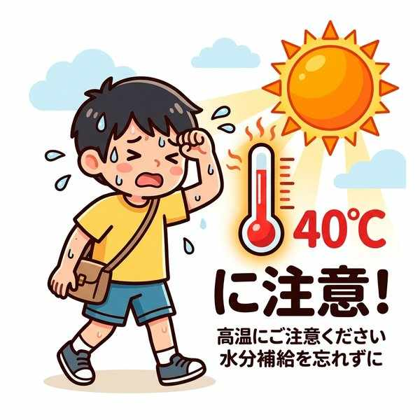
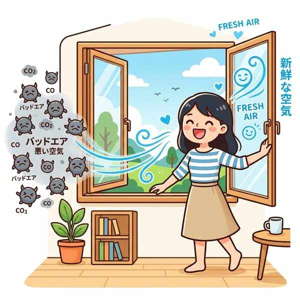
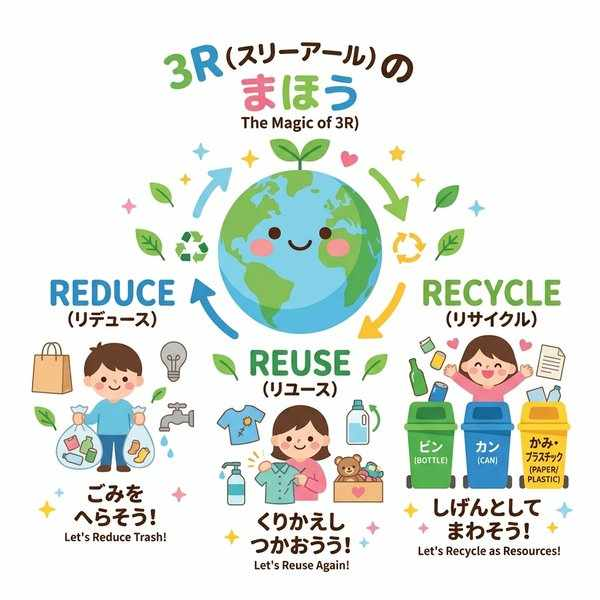

中学保健体育（保健分野）
単元6: 健康と環境、社会保障
私たちは、常に周囲の自然環境や社会環境から影響を受けて暮らしています。この単元では、身体の環境への適応力、空気や水の衛生、ゴミの処理と3R、公害の歴史、そして人々の健康を支える地域保健や医療制度について整理します。
1. 環境の変化と私たちの体
- 適応能力（てきおうのうりょく）：暑さや寒さなど、周囲の環境が変化したときに、体温などの体内の状態を一定に保とうとする力。暑いときには皮膚の血管を広げて熱を外に逃がし、寒いときには血管を縮めて熱を逃がさないようにします。
- 熱中症（ねっちゅうしょう）：暑さに対応する適応能力の限界を超えることで、体温調節ができなくなり、めまい、吐き気、けいれん、意識障害などが引き起こされる症状。
- 体感温度の3要素：私たちが感じる暑さ・寒さは、気温（温度）、湿度、気流（風）の組み合わせで決まります。
- 至適温度（してきおんど）：活動するのに適した温度の範囲。

適応能力の限界を超えることで起こる熱中症
2. 室内の空気と明るさ
- 明るさ（照度）：明るさを表す単位はルクス（lx）です。活動内容によって適した明るさは異なり、学校では普通の教室よりも、細かい文字を見る「図書閲覧室」や「コンピュータ教室」のほうをより明るくする必要があります（廊下などは暗くてもよい）。
- 二酸化炭素（CO2）：多くの人が閉め切った部屋にいると増加します。室内の空気の汚れ（換気が必要かどうか）を知る指標として測定されます。
- 一酸化炭素（CO）：石油ストーブなどの不完全燃焼で発生する極めて有害な気体。においも色もなく、体内に入ると血液中のヘモグロビン（赤血球）と強く結びついて、酸素の運搬を妨げ、一酸化炭素中毒を引き起こします。
- 換気（かんき）：窓を開けるなどして室内の汚れた空気を外の新鮮な空気と入れ替えること。

一酸化炭素中毒やCO2濃度増加を防ぐ「換気」
3. 水の衛生と下水処理
人間の体の約60〜70%は水分でできており、生命維持には1日あたり約2〜2.5Lの水分が必要です。
- 上水道：川やダムから水を取り入れ、浄水場（じょうすいじょう）で泥や細菌を除去し、塩素で消毒して安全な水を家庭に送ります。
- 下水道と排水：
- 生活雑排水（せいかつざつはいすい）：台所、風呂、洗濯など、水洗トイレの「し尿」を除いた排水。
- 生活排水（せいかつはいすい）：し尿と生活雑排水を合わせたもの。
- 処理施設：下水道のある地域では下水処理場に集めて処理します。下水道がない地域では、し尿と生活雑排水を微生物の力で一緒にきれいにする合併処理浄化槽（がっぺいしょりじょうかそう）が設置されています。
4. ごみ処理と3R
- 分別収集（ぶんべつしゅうしゅう）：ごみを処理・リサイクルしやすくするため、種類別に分けて集めること。
- 3R（スリーアール）：限りある資源を有効利用する循環型社会（じゅんかんがたしゃかい）のキーワード。
- リデュース（Reduce）：ごみそのものの発生を減らす。
- リユース（Reuse）：一度使ったものを再使用する。
- リサイクル（Recycle）：資源として再生利用する。※「リニューアル（新しくする）」は含まれません。

循環型社会を支える3R
5. 公害問題と環境保全
産業の発達によって出された汚染物質が、人々の健康や自然環境を害することを公害（こうがい）といいます。
| 公害病名 | 原因物質 | 特徴と被害の内容 |
|---|---|---|
| イタイイタイ病 （富山県・神通川流域） |
カドミウム （水質汚染物質） |
鉱山からの排水に含まれたカドミウムが米や水を介して体内に入り、腎臓障害を起こし、骨がもろくなって全身に激しい痛みを伴いました。 |
| 四日市ぜんそく （三重県四日市市） |
硫黄酸化物 （大気汚染物質） |
石油コンビナートのばい煙に含まれる硫黄酸化物（SOx）などが原因で、周辺住民に激しい咳やぜんそくなどの呼吸器系障害が多発しました。 |
| 水俣病 / 新潟水俣病 | メチル水銀 | 工場排水に含まれたメチル水銀が魚介類に蓄積し、それを食べた人に手足のしびれや視野狭窄などの神経系障害を起こしました。 |
- 法律：1993年に環境保全の基本方針を定めた環境基本法が制定されました。近年は大気汚染の原因となる微小粒子状物質PM2.5や地球温暖化（熱中症やマラリアなど媒介蚊の生息域拡大）が問題視されています。
- 放射線と健康：放射線が人体に与える影響（被ばく量）の単位はシーベルト（Sv）です。（※ベクレルは放射能の強さ）。私たちは日常生活の中で、宇宙や大地などの自然界から常に自然放射線を受けています。
6. 健康を支える社会保障と保健機関
- 保健所（ほけんじょ）：都道府県や政令指定都市などが設置し、感染症の予防、食中毒の調査など、専門的・広域的な活動を行う機関。
- 保健センター（市町村保健センター）：主に市町村が設置し、健康相談や乳幼児健診、予防接種などの身近で直接的な保健サービスを行う機関。
- かかりつけ医：日頃の健康状態を把握し、病気やけがのときにまず受診する地域の手近な医師。
- 健康増進法（けんこうぞうしんほう）：国民の健康づくりを目的とし、受動喫煙の防止などが義務付けられた法律。
- ヘルスプロモーション：個人の努力だけでなく、健康を支援する社会的な環境づくりが必要であるという考え方。
🔥 定期テスト対策・暗記のコツ
① 一酸化炭素の危険性
一酸化炭素（CO）は「においも色もない」ため、発生に気づきにくい気体です。体内に入ると、酸素より優先して「ヘモグロビン（赤血球）」と結びつき、全身を酸素不足にします。この結合の仕組みは記述問題でもよく問われます。
② イタイイタイ病の原因物質
「イタイイタイ病 ➔ カドミウム（水質汚染）」。水俣病の「メチル水銀」や四日市ぜんそくの「硫黄酸化物（大気汚染）」との組み合わせを絶対に間違えないようにしましょう。
③ 保健所と保健センターの役割の違い
「専門的・広域的なサービス（感染症対策など） ➔ 保健所（都道府県など）」、「身近な健康相談・予防接種 ➔ 保健センター（市町村）」。主体の違いと業務の規模感の違いは非常によくテストに出ます。